1928—The New-Way Course in Millinery and Hat Design
Lesson 3—Materials
Millinery Materials
What are the materials used in millinery work? What kinds of cloths are used, what kinds of straws? Are millinery materials the same as those used in dressmaking or in other branches of creative sewing?
These are questions that must be exhaustively answered before you can proceed with your millinery work. You must know when to use straw and when to use silk, when to use felt and when to use velvet. You must know the difference between hemp and chip, between dress velvet and millinery velvet, between good satin and poor satin.
This lesson endeavors to give to you in concise, practical form the various types of millinery materials, their most predominating uses, and their distinguishing features. By studying carefully the different parts of this important lesson, you will take a big step forward on the road toward expert hat construction. Little stories of manufacture, of historical interest, and of personal interest have been added to the lessons to give you a clearer and more intimate understanding of the technique of millinery.
We think that you will enjoy this lesson. We know that it will be of tremendous value to you, as it contains valuable information culled from some of the greatest millinery authorities. If you master this lesson thoroughly, you can feel that you have taken a great stride forward in the matter of millinery.
The History of Straw Braid Making
Straw has always been one of the most popular and widely used hat materials. Until a comparatively recent time, all straw materials and all straw hats were made by hand. Today, machine inventions do the work more quickly and more efficiently. Some of the finest and most attractive braids obtainable are made on machines.
Where labor is cheap—in Japan, China, Italy, Central and South America—braids are still made by hand. The Panama hat, for instance, is made by hand. The natives gather the leaves of the wild screw palm, prepare and plait them and then weave the plaits into hats. But there are imitation Panama hats that come from Japan and that are known as Adamba, Toyo, Formosa. These, too, are made by hand—mostly by women.
What we are more intimately concerned with, however, are the various kinds of machine-made braids that are used today in the construction of hats. There are huge factories in the United States and in other countries, devoted solely to the preparation of millinery straws and the manufacture of straw braids. Suppose we consider each type of braid individually, describing it, giving its uses, and telling a bit of its history.
The braids that are used extensively in the construction of summer hats divide themselves into two distinct parts—hand-made and machine-made. The braids made by hand include tuscan, milan, hemp, imitation hemp, Panama and its three imitations mentioned before (Adamba, Toyo, Formosa). Those that are made by machine include chip, ramie, yedda, horsehair, imitation horsehair and countless novelty braids which are a combination of one or two materials. Each one of these braids will be taken up in detail later.
The first looms for braiding straw made their appearance about 1840. Development was rapid, and it did not take long before factories were built for the purpose of manufacturing straw braids. Most of the raw straw material is obtained from China, Japan and Italy—the best grade being produced by the last-named country.
How is straw grown, you ask? Wheat is sown in the early Spring in high, arid places. It is sown very closely, and when it grows it is very tall and very close together. Each stalk is so close to the one next to it that they support each other. The wheat is harvested when the ear is about one-half developed and all harvesting is done by hand to prevent the pitch in the straw from escaping. The next process is to bleach the straw in the sun, or by exposing it to sulphur fumes. By allowing the wheat to ripen before the straw is harvested, Chinese straw is rendered brittle.
You are now ready to study each type of straw. Be sure to study each one carefully, for before long you will have occasion to use these materials and you should be able to recognize them at a glance.
Leghorn and Tuscan Braids
The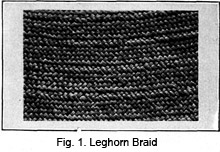 milliner who is not familiar with the various makes of braids, their names and textures, is handicapped. The first braid that you should know is tuscan—a strong durable braid which comes in rich, creamy yellow or light tan. It is a most gratifying braid to work with, as it is soft and pliable. Some types of tuscan—for instance, lace tuscan—make beautiful hats.
The word "tuscan" is derived from Tuscany, the name of a region in Italy. From a port in Tuscany is shipped also a fine straw called leghorn. Both these straws come in many grades—some fine and some coarse. They are woven by the women and children of Italy, and some are so cleverly sewed together that they look as though they were woven in one piece.
Both tuscan and leghorn braids are popular for use in summer hats and they are braids that you will enjoy using as they are soft and pliable. We might mention, at this point, that if you happen to choose a braid that is stiff and hard to weave into attractive designs, you may dampen it slightly. This will make it soft and you will have no trouble in applying it to the shape. Fig. 1 shows leghorn braid.
Milan Braid
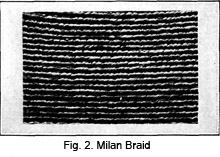Millinery owes a great debt of gratitude to the picturesque old town of Milan—for not only did it give millinery its name, but it gives to milliners delightful Milan braid from which to make beautiful hats. These braids can be purchased in many attractive colors, black and white included. The white braids are especially attractive, as they have a rich gloss and sheen on the surface.
Very often Milan straw hats are made double—the upper part of the hat being of one color and the facing of another. The contrast is most attractive. The braid itself, while stiff, is pliable and not difficult to work with. Milan braids are usually machine sewed, and come to the milliner blocked and ready to trim.
Lisere
The word "lisere" means binding—and it is used in millinery to denote a certain rather coarse shiny straw braid. This straw braid comes from Switzerland, Belgium, China and Japan, and while it is not used as extensively as some of the other straws and straw braids, many attractive hats are made from it.
Hemp
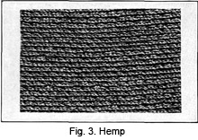The plant that yields the fiber from which hemp is made is found in the Philippines. Since the early part of the sixteenth century, hemp-weaving has been an important native industry. Men and women natives of the Philippines are skilled in cutting and sorting the hemp fiber, in weaving the hemp braid. It is not a straw, but is a fiber from a species of hemp plant from which many fine hats are made.
Hemp hats have many advantages. In the first place, hemp dyes well, the surface takes an attractive gloss, and the color is retained a long time. The fiber has strength and durability; it is not affected by moisture as so many of the straws are; it is stiff yet pliable, substantial yet light in weight. (Fig. 3.)
Manila hemp is obtained from a species of the banana. It is the finest of all hemp fibers and makes beautiful hats. In fact, it is so fine that laces are made of it, and even cloth that is fine enough to be used for dresses.
All manila hemp braids are exported in quantity to the United States and other countries from the Philippines. There are many different grades, and each grade is carefully sorted into five or six classes.
Chip Braid
In the valley of the Po River in northern Italy grow slender willow trees. From these trees are made chip braids—the only wood braid that is used to any extent in millinery. The young tree is split into sections, planed smooth and cut into fine strips. When these strips are planed off, a thin chip is formed.
There are many advantages to a chip hat. In the first place, it is extremely light in weight, smooth and attractive. It has a delightful soft, dull finish. A decided advantage of chip is its inexpensiveness. However it is not a durable material and does not wear as well as hemp or milan. In fact, hemp has very largely taken the place of chip in the manufacture of summer hats.
Yedda
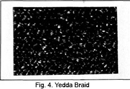From a tall grass grown in Italy, Japan and the Philippines, a light-weight, coarsely-woven braid is made. It is called yedda braid. Most of it is woven by machinery, but sometimes fine, fancy yedda braids are woven by hand. These last are very expensive and are not used very much in millinery.
Italy was the first country to produce yedda braid in quantity. The Japanese were quick to imitate, and while they produce a yedda braid inferior to the Italian, it is so very much cheaper that it enjoys great popularity and is used a great deal in the making of summer hats—especially for children.
Horsehair
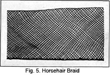Siberia, China, Australia, Switzerland—all contribute to the supply of horsehair which is used so extensively in millinery. But probably the best horsehair comes from South America, from which country it is exported in huge quantities. In Switzerland, horsehair braid is made by machinery.
Horsehair is very often used in combination with straws or other materials. The braid is stiff, glossy and light in weight and resembles open lace-work. It is made in plain and fancy weaves.
Ramie
Several types of millinery braids, loose, coarse and durable, are made from the fiber of the ramie. This is obtained from the nettle plant, which closely resembles flax. Sometimes it is called "China Grass" because it was obtained originally from China. It is used also for the manufacture of cloth.
Today, braids woven from the fiber of the ramie are obtained from Japan, Egypt, the Philippines, West and East Indies, southern countries—and, of course, China. It is bleached, dyed, twisted and woven into braid.
Panama Hats
Summer isn't summer without the Panama hat. It is popular among men and women alike. No doubt you are interested in knowing how it is made and how to identify it.
The name "Panama" is derived from Panama, the location from which the hats are distributed. The hats are not made in Panama—it is merely the distributing center. There are two distinct types of Panama hats—the genuine Panama and the Japanese imitations. Under the latter class come Adamba, Toyo and Formosa.
The largest Panama hat producing countries are Central and South American countries, Ecuador, Peru, etc. The industry has been carried on for centuries by the native Indians of Central America. These natives gather the leaves of the wild screw palm, split the young leaves into shreds removing the veins and ribs, soak them for a week or so, bleach them in the sun for three or four days until they become cream white, and then make up and sell two-pound bunches of the leaves. Other natives, skilled in the work, plait the palm leaf strips, and make the hats over wooden blocks shaped to fit the head.
Genuine Panama hats are extremely expensive. Some of them require a week of fine hand-work before being completed. The part of the hat that is being worked must be kept wet so that the fibers do not become brittle and crack. A fine Panama hat is so soft and flexible that it can be folded up into a small package about five inches square and yet will spring back into shape readily upon being opened.
In imitating the appearance and weave of the Panama hat, Japan has produced several cheap imitations. To distinguish the genuine Panama, hold it up to the light and see if there are any knots or patched places, any split straws or rough spots. Fine genuine Panama hats have none of these flaws. Also see if the hat is artificially stiffened. Genuine Panama hats are stiff enough naturally.
Bamboo Hats
Another popular type of hat is the Bamboo Hat—sometimes called Java or Manila. The raw material for the making of bamboo hats must go through many processes before it is ready to be woven.
The tall stalks of the bamboo are dried in the shade for several days. The middle sections of each stalk are cut into from ten to twenty layers which are then boiled in water partly to bleach them and partly to toughen them. The sun finishes the bleaching process, and the layers of bamboo are then ready for weaving.
This weaving into braid is done by the native women. Sometimes men also do the work, but the women are more skilled. It is not difficult to weave the braid as the bamboo is flexible; in fact it has to be woven together very closely to give the hat stiffness.
Bamboo hats take dyes and bleach very easily. And when the surface is rubbed with another smooth, hard surface (such as a bottle) a fine, attractive luster is obtained. One of the many popular methods of trimming bamboo hats for women is to paint birds, flowers or other decorations in vivid colors on the surface.
Novelty Braids
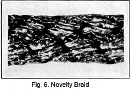There are many other kinds of straws—some used a little, others used extensively—but all are novelty braids and straws that are used one season and probably do not recur for several years. Each new season has its "new hat straw"—but if close observation is made you will find that most of these new straws are simply adaptations of straws that have been in use for a long time. Perhaps the weave is looser, or the design more intricate, or the finish less glossy. But most all the straws extensively used in millinery have been described here and as much of the history as would be interesting to you, given.
Most of the braids and straws we have spoken about in this lesson are used for summer hats. There are other materials used for braids which make them suitable for in-between seasons and for winter wear. Woolen yarn, for instance, is often made into braid; chenille, combinations of fiber and velvet, chenille and wooden beads, and many other combinations are used in making these braids.
This completes the subject of straws and straw braids, but before we can leave this lesson it is necessary to know materials that are used in hat-making and the materials that are used for linings and hat foundations. Perhaps this information does not seem important to you now; it may even seem a trifle dull and technical. But as you advance with your studies, you will find that it is one of the most valuable lessons in the course and that the information it contains is of great importance.
Felt Hats
Let us first consider Felt hats, which have been popular for centuries and which bid fair to be popular for centuries to come. It is interesting to know that felt hats have been worn by men and women since the fourteenth century.
It was in 1453 that felt hats were adopted in France. As France was, even at that early time, the style center of the world, the manufacture of felt hats began in real earnest—and since then the industry has flourished until today it has reached tremendous proportions. Summer and winter, spring and fall—every season brings with it something new in the way of a felt hat.
Perhaps you would like to know a little about the history of felt hat-making. For a time, England produced the best quality of felt hats. But from Colonial times until now, the finest felt hats are made in America, Brooklyn, N. Y., Reading and Philadelphia, Pa., Orange and Newark, N. J., are the centers of the felt-hat industry. The invention of remarkable machines has so improved and simplified the industry that it has thrived more than any other branch of hat-making and is both profitable and successful.
The materials used in the manufacture of felt hats are obtained from the fur and wool-bearing animals of Australia, Russia, Siberia and Scotland. The felt hats made from fur are the most expensive and the most attractive. Those made from the "noils" or wool waste of large wool factories are the intermediate grade. The cheapest grade of felt hat is made of the combination of wool-waste and cotton.
The process of making the felt and molding it into a hat is a long one, and of no particular interest to you as a milliner except that most of the work is done on machines. But it will be of benefit to you to know how to distinguish between the various types of felt. For instance, hats of shoddy, which is a combination of the cheapest wool and cotton, are sometimes thick and downy in finish—something like velour with a little nap. In the best grade fur felt hats, the size and thickness is uniform, the surface has a lustrous and glossy finish, and the nap is slightly looser than that found in velour-finish felt hats. In these latter the finish is dense and erect; in high-grade felt hats the nap is either flat or slightly loose.
Velvet Hats
Velvet was first introduced as a material for millinery purposes at the time of the Norman Conquest when gay-colored plumes adorned still more gaily colored hats of velvet. Because of the scarcity of this new pile fabric, only the men and women of nobility wore the plumed velvet hats, but in their effort to emulate the dress of the nobility the people of the middle classes soon found a way to manufacture the pile material cheaply.
The reason we refer to velvet as a pile fabric is because of the soft nap, or pile, which covers the true material. This true material is the cloth that forms the back, and it is almost invariably of cotton. In most velvet fabrics, the pile is of silk. The process of combining pile and back into one attractive fabric is not as complicated as some of the other processes of fabric-making. It is simply a matter of double-cloth weaving—carrying part of the warp thread over a wire and cutting the loops afterward.
Use of Velvet in Millinery
For the dressy winter hat there can be nothing quite as attractive and quite as appropriate as the velvet hat. If the velvet is of good quality, the trimming correct, and the shape becoming no other hat made can appear so smart and pretty. That accounts for the prevalence of velvet hats throughout countless seasons of millinery; other fabrics may come and go—but velvet remains a staple.
For the elderly woman, the velvet hat is ideal. It adds a note of dignity to the rest of her costume, frames the face softly and attractively, and adds a new charm to the face. Velvet for the young girl is ideal, too, as it brings out the youthfulness of her face in striking contrast and gives wistful softness to the eyes and face.
Being itself a material of beauty and richness, velvet used on hats does not require much trimming; for the girl, a flower at a just-right angle, or a bit of bright ribbon, for the woman, ostrich trimming, or an ornament of jet, or perhaps just a bright pin. Black velvet is most attractive, but the material also comes in various pretty shades.
How to Determine the Quality
The beginner sometimes makes the mistake of using dressmaker's velvet in making hats. The velvet used in millinery is very much different. It is lighter in weight, has a heavier nap, and comes in several different qualities.
There is Lyons velvet, for instance, which derives its name from the fact that it was at one time manufactured exclusively in Lyons, France. Today it is woven in America, although a large quantity is still imported from foreign ports. To distinguish Lyons velvet from other qualities of the pile fabric, look first at the back. Most Lyons velvet is made with a silk back, although it is sometimes made with cotton or linen backs. This type of velvet is almost always lighter in weight than any other type.
In fact, you can invariably determine the quality of the velvet by the back of the material. A very close, fine weave indicates a fine quality. When the back is silk, the nap is seldom as heavy as when the back is cotton, for in the latter case it is necessary for the pile or nap to be heavy enough to cover the cotton back.
A good test of quality is to fold the velvet and observe how much of the back shows through at the folded edge. If it is a fine grade of velvet, the back will be well covered and very little will show through. Of course, the quality of silk used in the weaving of velvet has a great deal to do with the quality—the better the silk used, the better the velvet fabric.
Duvetyne for Hats
Duvetyne is, comparatively, a new material. It is a soft, rich fabric that wears well, can be cleaned readily and drapes in a beautiful manner. It comes in beautiful shades and makes delightful hats both for sports and dress wear.
Duvetyne has a nap surface on the right side, as velvet has, and a surface on the back which is very often like a fine crepe satin. However, there is a cheaper grade of this material which does not have this back and which is a poor material to use for any purpose whatever. If you use duvetyne at all in your millinery work, be sure to select the fine, silk backed kind with the soft, glossy nap.
A duvetyne hat does not require much trimming as the material itself is rich and attractive and a great deal of trimming would be in bad taste. Hand embroidery is being used a great deal on this type of hat.
Satin
When one wishes an appropriate in-between season hat, or a hat that is dressy without being conspicuous, or a hat that can be worn with almost anything one has—one invariably chooses satin. For satin is the material for all seasons and all occasions, the material that is attractive without being conspicuous, that wears well without giving the appearance of being sturdy, that is becoming to almost all types of faces.
But it is important that only the finest grade of satin be used in hat-making. The cheaper grades do not hold their finish, the surface becomes rough and unsightly after a short time, and the material does not drape itself well. On the other hand, fine quality, lustrous satin falls in exquisite soft drapes, has a deep, beautiful sheen and retains its charming appearance for a long time.
Satin may be used in combination with almost every other material. Satin and straw is effective, and satin and fur makes a most appropriate winter combination.
Taffeta Silk
Just as satin is used extensively for an in-between season hat, so is taffeta used largely for this purpose. It is really an all-year-round material that is always appropriate and always attractive. This is true only when the silks are of dark shades.
Only the softer qualities of taffeta silk should be used for millinery purposes, as the stiffer qualities are usually weighted artificially and they break and crack very easily. And if you use weighted taffeta, you will find that your hat looks shabby and unattractive long before the season is over.
To know whether or not silk is weighted, burn a small piece. If it burns to a fine, gray ash it is pure silk; if a stiff black framework remains after the silk is burned away, the material is weighted.
Other silks used in millinery are Peus de Soie, Faille (used in mourning wear) and China and Jap silk which are used for linings. Then, too, there are silk crepes, such as georgette crepe, crepe chiffon and crepe de chine, silk laces and silk nets.
Transparent Materials and Others
In the summer-time, transparent hats are attractive for dressy wear. They are made of maline or tulle, georgette crepe, chiffon, lace or net. They may be trimmed in any number of attractive ways—flowers being the usual and perhaps the most appropriate trimming agent.
Hats are also made of linen, crash, duck and materials of this kind for outing wear, sports wear, or wear with linen or gingham frocks in the summer. They are youthful, dainty hats which are worn almost exclusively by young girls.
For important occasions there are hats of gold and silver cloth, and gold and silver lace. These are elaborate hats which should be worn only with elaborate dress. To be well-dressed the entire costume must harmonize.
Fur Hats
With heavy winter coats, fur hats are often worn. They are made of the short-haired furs, sometimes alone and sometimes in combination with silk, satin or velvet. As a fur hat is necessarily a heavy hat, it is important that the lighter weight furs be used, as, for instance, seal, ermine and beaver.
Foundations for Fabric Hats
Unless they are tam-o-shanters, fabric hats are usually made over foundations, the foundation for a fabric hat may be of many different kinds of materials—each particular foundation material is suited to some particular kind of fabric.
The frame for transparent hats, hats of straw braid, and other light-weight hats, is usually of wire. The best wire to use is that which is covered with silk or cotton, the former being the best when the material used is transparent. Uncovered wires should not be used as they have a tendency to rust and discolor, thus spoiling the material above.
One of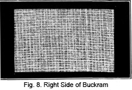 the 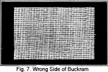most commonly used materials for hat foundations is buckram. Fig. 7 shows wrong side and Fig. 8 the right side of buckram. It is a solid foundation, can support heavy materials and comes in various weights. There is buckram of one, two, three and four-ply; the one-ply is light in weight and used in making extremely light-weight hats; the two-ply is the most generally used and is the best for all ordinary purposes.
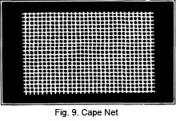For soft frames, cape net is used. This is an open-mesh material and is ideal for use under duvetyne and fine silks. It has the advantage of being very pliable and may be tacked into any shape desired after it is covered. (Fig. 9.)
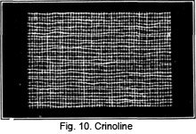Another thin open mesh material used to make soft hat frames is crinoline. However this is a glue sized material and not always as satisfactory as cape net. Crinoline is also used to cover wire frames over which material that is not transparent is to be used. (Fig. 10.)
A straw-like material known as willow-plate can be used for blocked frames, or frames made without blocking. It is rather expensive and not generally used. It must always be damp when working on it, or it will crack and break.
Be sure to choose the foundation that is appropriate for use with the material you expect to use on the surface of the hat. The foundation material must be heavy and substantial enough to support the surface material.
Materials Used for Linings
The same applies to the materials used for linings—choose the lining that harmonizes best with the rest of the hat. There are several different materials you may select from. In cheaper hats, mercerized materials are used. In the finer hats, China and taffeta silk are used.
Ready-made linings may be purchased that are easy to sew right into the hat. But the lining that is made to fit the hat is always better. And on the other hand, when the lining is made for the individual hat, it will not only fit better, but will harmonize with the general style and color note of the hat.
Maline is the best lining for transparent hats. All linings should be sewed above the base of the crown so that the edge does not show when the hat is worn. If you find, after applying a lining, that the hat persists in slipping too far over the head, the fault may be corrected by adjusting the lining.
Bandeaux are 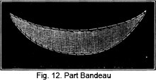sometimes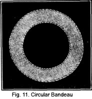 used to make the headsize smaller, or to fit the hat at the becoming angle. They may be purchased or made of buckram wired and covered with material matching the hat. Sometimes the bandeau is in the form of a circle, the opening in the center of the circle being smaller than the headsize of the hat, the outside of the circle being the exact size of the headsize of the hat. (Fig. 11.) This circular bandeau may be made a slanting band which will allow the hat to drop a little, yet not down so far that it will be unbecoming. Sometimes the hat requires a bandeau which extends only partway around the head. (Fig. 12.)
This completes the lesson on hat materials. In the next lessons you will learn all about wire frames. This phase of millinery is extremely important, and you will be making a mistake by leaving this lesson on materials before you have completely mastered it.
Review it now. Start from the beginning and review the entire lesson thoroughly. Then see if you can quote from memory the various kinds of materials, the foundations and the various kinds of straws and straw braids. You will find this knowledge of extreme value to you throughout your work in millinery.
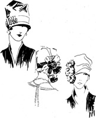LESSON 3
QUESTIONS
1. How is straw grown?
2. Hemp hats have many advantages. Name them.
3. What is chip braid?
4. What is yedda?
5. (a) Where does the best horsehair come from? (b) What is the appearance of horsehair braid?
6. How would you distinguish genuine panama?
7. What trimming is usually applied to bamboo hats?
8. When were felt hats first worn?
9. Name five materials used for transparent hats.
10. What is one of the most commonly used materials for hat foundations?